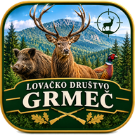

Lovačko društvo "Grmeč"
Novi nalog čeka odobrenje administratora društva.

Novi nalog čeka odobrenje administratora društva.
Vaš nalog je primljen. Administrator društva ga treba odobriti prije korištenja.
Čekam GPS…
Lokaciju sa sekcijom dijele članovi i grupovođa sekcije.
Lokaciju vide samo članovi, grupovođa i lovočuvar te sekcije, i samo dok dijeljenje traje (najviše 24 h). Prestaje kad isteknu vrijeme ili kad prekineš.
Crveno = zabranjeno. Ne zamjenjuje pravila lova ni vođu lova; kompas može griješiti — provjeri pogledom.
Pomjeri kartu tako da nišan bude tačno na mjestu stana.
(tačaka: 0)
Dodirni kartu ili postavi nišan i dodaj tačku.
Karta lovišta koju objavljuje društvo. Preuzimaš je jednom (veliki fajl, stotine MB — koristi wifi), pa radi bez interneta. Na mapi se bira gore desno: podloga Teren.
Preuzima se područje koje je sada na karti (izabrana podloga i teren za N.V./nagib). Za cijelo lovište koristi MBTiles fajl.
Područja koja si preuzeo za rad bez interneta. Pločice ostaju u kešu dok ga ne obrišeš; uklanjanje sa spiska samo briše bilješku.
Još nema preuzetih područja.
Karta pripremljena u RMaps/MOBAC (fajl na telefonu) radi bez interneta i bez preuzimanja pločica.
Sačuvano pločica: —
Pločice koje si već vidio prikazuju se i bez signala. Obrisane se moraju ponovo preuzeti uz internet.
© OpenStreetMap, SRTM | © OpenTopoMap (CC-BY-SA) · © Esri, Maxar, Earthstar Geographics · © OpenStreetMap contributors.
Ne zamjenjuje pravila lova ni vođu lova; kompas može griješiti — provjeri pogledom. Vjetar je prognoza, a ne mjerenje.
Kod PREKIDA se uz server otvara i SMS svim učesnicima (pritisni Pošalji), jer obavijest stiže samo dok je aplikacija otvorena. Komande i statusi ne zamjenjuju pravila lova ni vođu lova. Bez interneta se događaj sačuva i pošalje kad se veza vrati; obavijest stiže samo dok je aplikacija otvorena.
Lokaciju vide samo učesnici i organizatori dok lov traje. Slanje staje kad lov završi ili kad isključiš dijeljenje; tvoja zadnja pozicija se tada briše sa servera. Dijeljenje ne zamjenjuje pravila lova ni vođu lova.
Veći tekst i veća dugmad u ekranima i meniju.
Učesnici lova vide gdje si samo dok lov traje. Isključivanje briše tvoju zadnju poziciju sa servera.
Da poruke, SOS i komande lova stignu i da se trag snima bez prekida, dozvoli obavijesti i isključi optimizaciju baterije za ovu aplikaciju.
Podaci koje unosiš ostaju na telefonu i šalju se na server kad ima veze. Za kartu bez interneta preuzmi područje u Meni → Karte i offline.
Svi tvoji objekti, opažanja, odstrel i tragovi u jednom fajlu (bez fotografija). Uvoz samo dodaje ono čega nema na telefonu.
Veza sa serverom:
Lovačko društvo "Grmeč"
Ako provjera ne radi, ovo uvijek preuzima i instalira zadnju objavljenu verziju:
Puška i ostalo što koristiš. Vidiš samo ti.
Broj vide samo učesnici lova dok lov traje.
Statistika se računa iz podataka na ovom telefonu (tvoji lovovi, odstrel, tragovi i opažanja). Ne zamjenjuje službeni lovački dnevnik.
Još nema snimljenih tragova. Snimanje se pokreće dugmetom sa krugom na karti.
Nema objekata. Dodaju se dugmetom + na karti.
Lovostaj i lovno vrijeme unosi administrator društva. Aplikacija ne zamjenjuje važeće propise, odluke društva ni lovočuvara.
Ne zamjenjuje službeni lovački dnevnik.
Obuhvata zapise na ovom telefonu (tvoje i podijeljene sa tobom). Ne zamjenjuje službeni lovački dnevnik.
Gdje je bio nastrijel? Snimanje traga potrage počinje odmah.
Granice lovišta, revira i lovnih površina na karti. Uvezene i preuzete granice ostaju na telefonu i rade bez interneta.
SHP: izaberi zajedno .shp, .dbf i .prj (ili ZIP sa njima).
Nema granica na telefonu. Preuzmi granice društva ili uvezi fajl.
Raspored preuzmi dok ima interneta — poslije radi i bez signala. Ne zamjenjuje pravila lova ni vođu lova.
Nema lovova na telefonu.
Pravci prema drugim stanovima aplikacija računa sama. Ručno dodaj pravce prema putevima, kućama i sl. (od–do u stepenima od sjevera, u smjeru kazaljke).
„Da” uključuje dijeljenje tvoje lokacije sa sekcijom na 1 sat (možeš ga prekinuti u „Moja lokacija”).
U sekciju se ulazi samo uz odobrenje grupovođe: zatraži pristup, a grupovođa odobri ili odbije.
Lovočuvar prati sve sekcije svog revira (članove, lovove, poruke), bez upravljanja.
Nisi član nijedne sekcije. Zatraži pristup od grupovođe: bez odobrenja se ne može ući.
Poruke vide članovi sekcije, grupovođa, lovočuvar revira i administrator.
Razgovor grupovođa, lovočuvara i administratora, izvan sekcija. Članovi ga ne vide.
Aplikacija sama ne čita ogrlice ni AirTag. Ogrlica ili njena aplikacija ti pošalje poziciju (SMS, link ili koordinate) — kopiraj je i zalijepi ovdje. Radi i bez interneta.
Biološki kalendar (parenje, mladi, rogovi, zimski san). Nije lovostaj.
Nema vrste za taj upit.
Ništa nije pronađeno.
Prikazuje se samo ono što je lovac zvanično prijavio društvu; privatni zapisi lovaca nisu vidljivi nikome osim vlasniku. Ne zamjenjuje službeni lovački dnevnik.
Nema opsega koji možeš gledati. Pridruži se sekciji u Meni → Sekcije i pristup.
Ulov se računa iz zvanično prijavljenih ulova, a prisustvo iz spiska učesnika lova. Odaziv je približan: učešća podijeljena sa brojem održanih lovova i članova.
Rejting je pomoć grupovođi i društvu, ne kazna: računa se samo iz podataka koji su prijavljeni na serveru. Broj komada ima gornju granicu da se ne nagrađuje pretjeran odstrel. Ne zamjenjuje procjenu grupovođe ni propise društva.
Društvu se šalju samo vrsta, kategorija, težina, vrijeme i tvoje ime. Tačna lokacija i napomene ostaju privatni. Prijava ne zamjenjuje službeni lovački dnevnik.
Slike lova vide učesnici, članovi sekcije i grupovođa. Šalju se na server (smanjene), pa se vide i drugima; velika slika ostaje na serveru 14 dana, a sličica trajno.